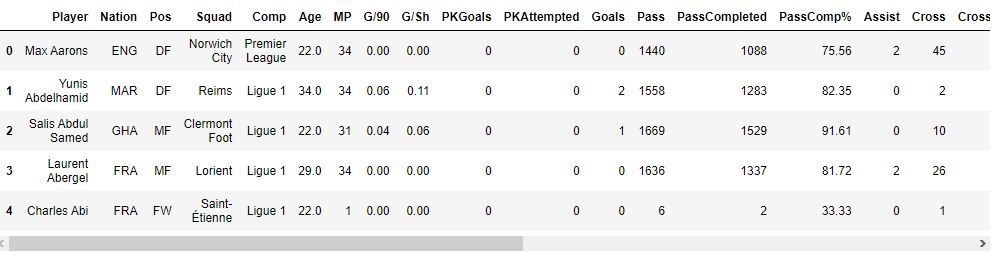
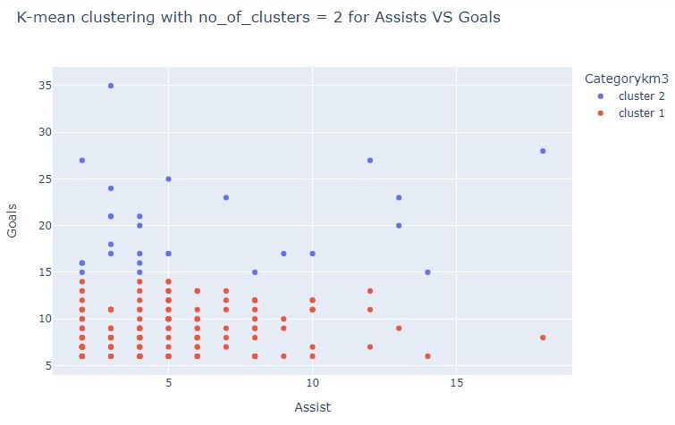

Clustering
analyses: Clustering
Data preprocessing:
This was the data that we obtained after cleaning the raw data in the last module. As our goal is to obtain and observe the players who had a great performance and impact offensively on the pitch we need to process the data further. We dont need the defensive attributes so we get rid of them. We dont need similar information like goals, goals/90 mins and so on, we can keep any one of them.
After cleaning we will obtain a dataset like this, then we can perform further analysis and use our models on this data
Kmeans Clustering:
It's one of the most popular unsupervised clustering algorithms. The objective of this algorithm is to group similar objects together. So, two objects in a cluster are more similar to each other than two objects from different clusters. We initially specify a number k, which refers to the number of clusters to be formed.
When we run a kmeans algorithm initiall k random centroids are created. Then the distance from each point to centroids is calculated. The closest ones are grouped together and form a cluster, then the centroid is recalculated by taking the average of all the points in that cluster. This process is repeated untill there's no more changes in the clusters.
Hierarchical clustering:
Hierarchical clustering is another type of clustering algorithm. Initially in this algorithm all objects are treated as a seperate cluster. Then there are two main steps that happen repeatedly:1) It identifies the two closest clusters. 2) It then merges the two clusters into one.This process is continued till all the clusters are merged together. A dendrogram is typically used to visualize a hierarchical clustering.
DBSCAN:
DBSCAN stand for Density-Based Spatial Clustering of Applications with Noise. It is a unsupervised density-based clustering algorithm. The idea is that a cluster is a region of high point density, seperated from other such regions by low point density regions.DBSCAN has two important parameters :eps: also know as epsilon parameter. It is a distance measure that sets a maximum distance. All the points within that distance are considered as neighboring points.min_sample: It is the number points that must be close (within the eps distance) to be considered as a cluster.There are different types of points in a DBSCAN cluster output. Core points which are points that have the required no.of neighbors. Border points which dont have the required no. of neighbors but, it is close to a core point. And Noise point, a point which does not have the required no. of neighbors and also not close to any core points. It is considered as a outlier.The algorithm starts by arbitrarily picking up a point and then visits all the points. If the required no. of neighbors within the eps distance is satisfied then a cluster is formed. The cluster is then expanded by recursively repeating the requirement calculation for each neighboring point.
Distance metrics:
There are different distance metrics that clustering algorithms can use to find the distance between two points. some of them are:Euclidean distance: It was one of the most commonly used distance metrics and is suitable for many datasets aswell. It gives the straight line distance between to points. The formula to calculate is given by: d = √[ (x 2 – x 1 )^2 + (y 2 – y 1 )^2]Where x1,y1 and x2,y2 are the coordinates of the two points. Euclidean distance is usually the default distance metric for most algorithms, but in some cases when the dimensions are not comparable, one of them will hold more weightage on euclidean distance. In such cases we can normazlize the features so that the values will always be between 1 and 0 and then we can apply euclidean distance.
Manhattan distance: It is the sum of the absolute distance between two points in all dimensions. It is a straightforward way, It's formula is given by:d = (x2-x1) + (y2-y1)Manhattan distance is best preferred when we have high dimensional data. It gives better results than euclidean in such cases. In some cases when we have multiple dimensions, euclidean is preferred cause it will give the straight line distance, manhattan will find distances in horizontal or vertical dimensions ( like in a chess board where we can move vertically or horizontally).
Cosine distance: Cosine distance or cosine similarity is used to find similarity between two points/documents/vectors by measuring the angle between them. Smaller the angle more similar they are and vice versa. It's formula is given by: Cosine similarity = (x*y)/( (√x*x)(√y*y) )Cosine distance = 1 - Cosine similarityCosine similarity is generally used when the magnitude of the vectors do not matter because it uses the orientation of vectors to find similarity. It is often used with text data. It is also used in recommendation systems to recommend items based on likes and dislikes.
In this analysis we will use different clusterring algorithms to analyze the top performers from all the leagues based on their performance in the last season.
Coding:
Results:
This image shows us the players after renaming some of the unique positions into more generic ones. We can observe that most of the players who contributed to the scoresheets are forwards.
In this we can see the players in a scatter plot. Most of the players are crowded, but there are a few who stand out. Robert Lewandoski leads the pack with the highest no.of goals being 35, while both Mbappe and thomas muller have 18 assists. We can see that mbappe had a solid performance last season by scoring and assisting.

This 3d plot gives us an understanding of how impacting the players where on the pitch. Player like Jorginho(bottom left of the image) who is a midfielder will have a lesser cross% but he had high passing% and dribble% which can have a high impact on the game.
This image gives us the elbow plot for our data. we can choose the number of clusters. I have chosen n as 4.

In this image we can see 4 clusters being formed. It clusters based on how many goals or how many assists a playe was able to get.
When we do the clustering with n = 3, we can see that the data has been split horizontally. Previously the green cluster which represented players with high no.of assists has been split into the red and blue clusters.
This image shows kmeans clustering when n=2.
This is a dendrogram used to represent a hierarchical clustering. In this the closest objects are grouped together first. upon joining all objects we can see an image like above. We can see like 4 clusters forming in this image. If we draw a horizontal line from y-axis = 30, we will slice through 4 lines creating 4 clusters.
This image shows hierarchical clustering usiong euclidean distance metric. euclidean distance calculates the distance between two points by aggregating the squared difference for each variable. we can observe that this image is very similar to the output we got from k-means clustering with n=4 as kmeans uses euclidean aswell.
The manhattan distance is calculated by aggregating the absolute difference for each variable. We can see that we dont get very good clusters, typically manhattan is appropriate to use when the different dimensions are not comparable. In our case it is better to go with euclidean distance.
This image shows us hierarchical clustering by using cosine distance metric. In this metric we don't calculate the distance between two points but we calculate the degree of angle between them. Cosine is generally used when we dont care for the magnitude of the vectors. i.e when the frequencies of our objects are not too important. but in our case the frequency is important.
This image gives us the output of dbscan clusterring. dbscan has two parameters that we need to provide values to. Those are eps(max distance for one point to be considered as a neighbor to other) and min_samples(The number of points that must be a neighbor for the point to become a core point). For the epsilon parameter(eps) we need to experiment by using differet values. For min_samples we need to use our domain knowledge. I have gone with 3, because i wanted atleast 3 other players to be close to form a group. Bottom left of the image seems to form a dense cluster where the players have a similar g/a ratio. The red dots are outliers. These are players who have had high goals or assists or both. Since it is tough to get more goals or assists, there are less players around them to form a group.
Conclusion:
After analyzing the dataset and running different clustering models on it we were able to find some key information. We can see that out of 2921 players there were only 186 players who had played more than 25 matches while scoring more than 5 goals and having 2 or more assists. Almost 75% of those players are forwards or Wingers. As goal scoring is mainly done by the front liners it is expected to have more attackers to score or assist.
Upon further visualization we can see that the majority of players form a dense group as shown by the dbscan results. And there are a few players who topped or had a great performance in the scoring charts or assist charts. By rating we might give Kylian Mbappe as the overall best player in the last season has he has topped the assist chart with 18 assists and is the second highest scorer with 28 goals. With great performances in both departments he deserves to be highly rated.
From the kmeans clustering with n=4 or with the hierarchical clustering with euclidean distance outputs which are similar we can see 4 clusters. I have named the clusters to make it simple:Star performer: These are players who's name is always on the score sheet and have had high contributions by scoring goals.Magician: These are players who set up for their teammates and contribute more through assists.Tornado: They have average contributions through goals and assistsContributer: These are plays who have low contributions through goals and assists. This information can be very usefull for managers or scout teams. If a team already has a star performer then they can keep a lookout for a magician who can compliment their star. A team with too many star performers will likey face troubles as the ego's of the players might class. So teams can try to find a tornado or contributor to fill in the gaps or to be used as a substitute.